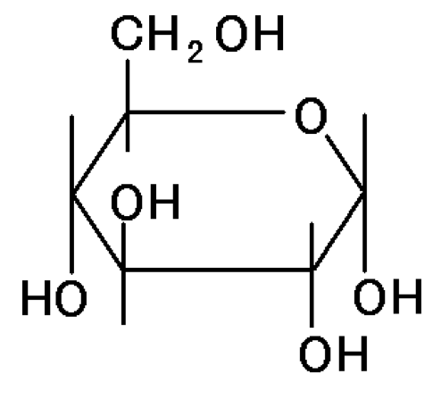
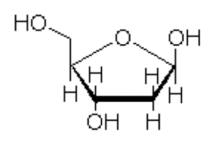

🐖概要
私たち生物は、エネルギーがないと生きていくことはできません。では、そのエネルギーをどのように得ているのでしょうか？
答えは、炭水化物すなわち糖を分解することによってつくっています。つまり、生物が生きていくためには炭水化物が不可欠というわけですね。
植物は自分で炭水化物を調達することができます。光合成などはその代表的な具体例で、二酸化炭素や水などの無機物から、有機物である糖を作り出すことができます。
一方人間は光合成はできません。どうやって炭水化物を得ているのでしょう。そうですよね、食べて得ていますよね。
普段私たちが食べているご飯やパンは、炭水化物が多く含まれています。これを使ってエネルギーを作っているのです。では次章では、どのような炭水化物（糖）があるのか、見ていきましょう。
🐖糖の種類
まずは炭水化物とは何かについて、説明していきます。
炭水化物（糖）は化学的には三種類の元素-C(炭素),H（水素）,O（酸素）-だけでできている生体分子の一つです。CとH2Oでできているから炭水(・・)化物なんていう言い方をするという人もいます。炭水化物は基本的には３種類の元素で作られていますが、それぞれの元素の組成によってたくさんの種類の糖があり、その化学的な性質や味などは全く異なります。また、糖には基本的な構成単位である単糖と、単糖がつながってできた多糖があります。本章では、代表的な単糖と多糖について、見ていきましょう。
グルコース

エネルギー源として最も有名な糖といえばグルコースでしょう。後述しますが、生物はこれを分解する際に生じるエネルギーを生命活動に利用します（解糖）。ごはんやパンに含まれている炭水化物は、これが多数繋がってできたでんぷんとよばれるものが主な成分です。これが分解されてグルコースになって、エネルギーの元となるわけですね

・デオキシリボース
また、生化学ではでデオキシリボースも非常に重要な糖のうちのひとつです。これは主にDNAの成分です。このデオキシリボースに塩基と呼ばれるものとリン酸がくっついたものをヌクレオチドと呼ぶのですが、これをひとつの構成単位と考えます。DNAはこれがたくさん合体してできているということになります。